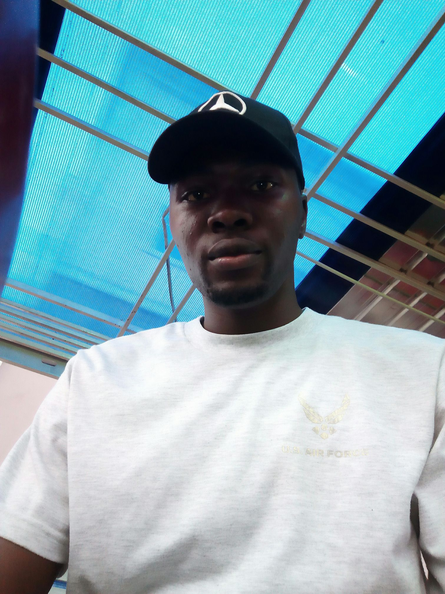

Ezeoha Ugochukwu Louis

Carreer Summary
Economics graduate with 2 years of quota-crushing B2B sales experience and 1 year as a research intern.
Since 2021, deep Web3 practitioner: started as airdrop hunting, now a recognized DeFi analyst and on-chain researcher specializing in tokenomics, protocol mechanics, and alpha discovery across L1/L2/RWA narratives.
Deeply passionate about decentralization, DeFi, and real-world blockchain adoption. Comfortable working hybrid/remotely with other team members
Currently seeking the next challenge where I can combine community leadership, operational excellence, and economic insight to help Web3 products reach millions.
Hence why i am learning full stack web development
Education
- BSc Economics, University of Nigeria, Nsukka (2017 - 2021)
- Full Stack Web Development, Udemy (Ongoing)
Work experience
Defi Analysis, Self Employed (2021 - Present)
- Perform deep dives into new and existing DeFi protocols (lending, DEXs, yield, liquid staking, perps, RWAs, etc.)
- Analyze tokenomics, incentive structures, emission schedules, governance risks, and economic attack vectors
- Track on-chain metrics: TVL, volume, revenue, user growth, retention, and fee accrual using Dune, DefiLlama, Token Terminal, Nansen, Arkham
- Evaluate smart-contract risks, audit reports, admin keys, upgradeability, and historical exploits
- Model yield sustainability, impermanent loss scenarios, and risk-adjusted returns.
- Identify emerging narratives and sector rotations early (e.g., restaking, intents, modular L2s).
- Write detailed research reports, investment memos, thread breakdowns, and dashboards.
Sales Representative at Ceneb Ventures Nig. LTD
- Prospected and generated new leads through cold calling, email outreach, networking, LinkedIn, events, and referrals
- Conducted product/service demonstrations, presentations, and pitches (in-person and virtual)
- Built and maintained strong relationships with prospects and existing clients
- Negotiated pricing, terms, and contracts; overcame objections and closed deals
- Met or exceeded monthly/quarterly sales quotas and KPIs (revenue, new customers, calls made, etc.)
- Prepared and sent tailored proposals, quotes, and follow-up materials
- Collaborated with marketing, customer success, and product teams to align on messaging and feedback.
Skills
Technical skills:
Dapp Testing, Wallet tracking, Portfolio Management, Tokenomics Analysis, Report Writing, Research & Econometrics Modelling, Data Visualization & Reporting, Project Management & Collaboration, Social Media & Content Writing.Soft skills:
Analytical & Critical Thinking, Teamwork & Collaboration, Verbal & Written Communication, Problem-Solving & Attention to Detail. Research Analysis, Brand Communications.
Certifications
- Introduction Project Management, July 2019, Value Plus Academy
- Introduction to Customer Service, July 2019, Value Plus Academy
- Decentralized Finance, Dec 2024 Udemy
- Full stack web development, Dec 2025, Udemy, (ongoing)
Hobbies
Contact